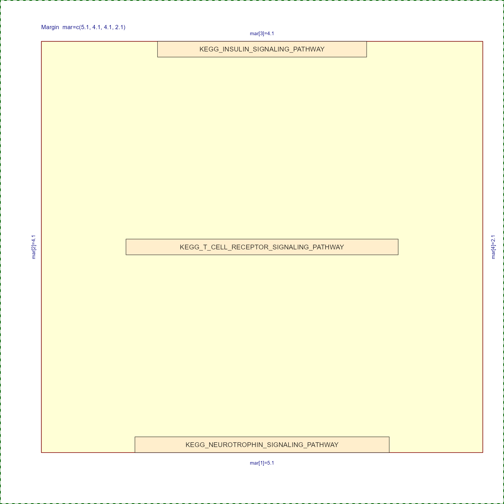

Fix Set or pathway labels for legibility
Source:R/jamenrich-fix-set-labels.R, R/multienrichjam-data.R
fixSetLabels.RdFix Set or pathway labels for legibility
Usage
fixSetLabels(
x,
wrap = TRUE,
width = 40,
maxNchar = Inf,
suffix = "...",
nodeType = c("Set", "Gene", "any"),
do_abbreviations = TRUE,
adjustCase = TRUE,
lowercaseAll = TRUE,
removeGrep = "^(KEGG|PID|REACTOME|BIOCARTA|NABA|SA|SIG|ST|WP|HALLMARK)[_. ]",
words_from = NULL,
words_to = NULL,
add_from = NULL,
add_to = NULL,
abbrev_from = NULL,
abbrev_to = NULL,
perl = TRUE,
...
)
words
abbrevFormat
words is a data.frame with colnames 'from' and 'to',
for pathway word Perl-compatible regular expression pattern and
replacement. It is used as default in fixSetLabels(..., words_from).
abbrev is a data.frame with colnames 'from' and 'to',
for pathway word Perl-compatible regular expression pattern and
replacement. It is used as default in fixSetLabels(..., abbrev_from).
Arguments
- x
any of the following objects:
charactervectorigraphobject. Theigraph::V(g)$nameattribute is used as input, and the resulting label is then stored asV(g)$label. WhennodeTypeis also defined, and nodes have attribute 'nodeType', only nodes with that attribute value will be edited. The default isnodeType="Set".Memobject. Thesets()are adjusted by this function.
- wrap
logicalindicating whether to apply word wrap, based upon the suppliedwidthargument.- width
integer value used when
wrap=TRUE, it is sent tobase::strwrap().- maxNchar
numericvalue orInfto limit the maximum characters allowed for each string. This option is preferred whenwrap=TRUEis not feasible, for example heatmap labels. WhenNULLorInfno limit is applied. Seebase::nchar().- suffix
charactervalue, default"...", used whenmaxNcharis belowInf. When a string is shortened tomaxNchar, thesuffixhelps indicate that there was additional text.- nodeType
characterstring ussed whenxisigraph, to limit changes to nodes by attribute values in"nodeType". Use"any"orNULLto affect all nodes.- do_abbreviations
logical, default TRUE, whether to applyabbrev_from,abbrev_to. These patterns are intended specifically to help shorten a long phrase, possibly removing words, or using common abbreviations.- adjustCase
logical, default TRUE, indicating whether to adjust the uppercase and lowercase lettering by callingjamba::ucfirst(). The default sets all characters to lowercase, then applies uppercase to the first letter of each word.- lowercaseAll
logicalused only whenadjustCase=TRUE, passed tojamba::ucfirst()- removeGrep
characterregular expression pattern used to remove patterns from the resulting label.The default removes common canonical pathway source prefix terms use in MSigDB data, for example KEGG, BIOCARTA, PID, etc. Use
""orNULLto skip this step.Multiple values can be defined, they are applied in order.
- words_from, words_to
characterdefault NULL uses internal datawordswith pattern and replacement.Input
words_fromcan be a two-columndata.frameexpected to have 'from' and 'to' in order.Supplied as vectors, the 'words_from' are regular expression patterns, replaced with 'words_to' in order, applied case-sensitive. It does use Perl regular expression in
base::gsub(), which is useful to use with 'backslash-b' to enforce a word boundary for example.
- add_from, add_to
charactervectors used in addition towords_from,words_to.'add_from' can be supplied as a two-column
data.frameas described for 'words_from'.These values are applied after
words_from,words_to, so that user-defined replacements have priority.
- abbrev_from, abbrev_to
characterdefault NULL uses internal dataabbrevwith pattern and replacement. Intended to apply a specific abbreviation, and only applied whendo_abbreviations=TRUE.'abbrev_from' can be supplied as a
data.frameas described for 'words_from'.The abbreviations are "opinionated" in that they may remove words or shorten common phrases which do not seem critical to understanding the meaning of most biological pathways.
Examples:
"Extracellular Matrix" becomes "ECM"
"Mitochondrial" becomes "Mito"
" Pathway" at the end of a phrase is removed, as it is not required to understand the rest of the label.
"Signaling by " at the start of a phrase is removed, as it also is not typically necessary to understand the label.
- perl
logicaldefault TRUE, passed togsub()for pattern matching. When Perl-mode is enabled, it also enforces word boundaries before and after each pattern. When Perl-mode is not enabled, there are no word boundary conditions applied.- ...
additional arguments are passed to
jamba::ucfirst(x, ...), for examplefirstWordOnly=TRUEwill capitalize only the first word.
Value
object whose class matches input 'x':
charactervectorigraphobject with vertex 'label' updated from 'name'Memobject with updatedsets()
Details
This function is a convenient wrapper for several steps that edit gene set and pathways labels to be slightly more legible. It operates on:
charactervector, returningcharactervectorigraphobject, where is uses 'name' to update 'label'Memobject, where it updatessets(Mem)
The arguments have extensive default values encoded, which are
represented in data multienrichjam::words for basic word replacement,
and multienrichjam::abbrev for abbreviations used only
when do_abbreviations=TRUE.
Summary of typical changes:
The vast majority of changes are custom biological terms which are expected to have certain capitalization, for example 'Mapk' is usually written 'MAPK'.
Some changes are motivated to fix common artifacts in public data, for example
'PI3kakt'refers to'PI3K/AKT'.To use your own replacements, supply
words_fromas a two-columndata.frame, or two vectorswords_fromandwords_to.To add custom effects to default, supply
abbrev_fromas a two-columndata.frame, or use two vectorsabbrev_fromandabbrev_to.
For igraph input, the vertex 'name' is used as the starting point.
To revert changes, use igraph::V(x)$label <- igraph::V(x)$name.
For Mem input, the sets(x) are updated, with no immediate way
to revert changes. It may become useful to do so in future, however.
See also
Other jam Mem utilities:
Mem-class,
MemPlotFolio-class,
mem2cnet(),
mem2emap()
Other jam igraph functions:
communities2nodegroups(),
drawEllipse(),
edge_bundle_bipartite(),
edge_bundle_nodegroups(),
flip_edges(),
get_bipartite_nodeset(),
highlight_edges_by_node(),
igraph2pieGraph(),
label_communities(),
mem2cnet(),
mem2emap(),
nodegroups2communities(),
rectifyPiegraph(),
removeIgraphBlanks(),
subsetCnetIgraph(),
subset_igraph_components(),
sync_igraph_communities()
Examples
x <- c("KEGG_INSULIN_SIGNALING_PATHWAY",
"KEGG_T_CELL_RECEPTOR_SIGNALING_PATHWAY",
"KEGG_NEUROTROPHIN_SIGNALING_PATHWAY");
fixSetLabels(x);
#> [1] "Insulin Signaling" "T-cell Receptor Signaling"
#> [3] "Neurotrophin Signaling"
fixSetLabels(x, do_abbreviations=FALSE);
#> [1] "Insulin Signaling Pathway" "T-cell Receptor Signaling Pathway"
#> [3] "Neurotrophin Signaling Pathway"
jamba::nullPlot();
jamba::drawLabels(txt=x,
preset=c("top", "center", "bottom"));
